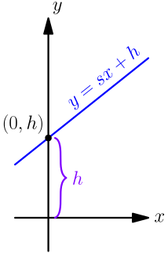
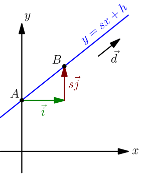

Equation of Line with Slope¶
Here's what we know about line equation in normal form:
- The equation of any line can be written as $ax+by+c=0$, where at least one of $a$ and $b$ is nonzero.
- Any equation $ax+by+c=0$, where at least one of $a$ and $b$ is nonzero, is the equation of a line.
- $ax+by+c=0$ is called the normal form of the line equation, because $a\I+b\J$ is the normal vector of the line, and it appears in the equation.
Let's solve the normal form line equation $ax+by+c=0$ for $y$: $$ \begin{align} ax+by+c &= 0 \\ by &= -ax-c \\ y &= -\frac{a}{b}x - \frac{c}{b} \end{align} $$ By letting $s=-\frac{a}{b}$ and $h=-\frac{c}{b}$, we get $$ y = sx + h. $$
Not all lines have an equation like this. In the above derivation, we needed to divide by $b$, so it must be nonzero. Now consider any line equation for which the above doesn't work; that is, any line equation $ax+by+c=0$ with $b=0$. Because at least one of $a$ and $b$ is nonzero, $a$ must be nonzero, so we can divide by it: $$ \begin{align} ax+0y+c &= 0 \\ ax &= -c \\ x &= -\frac{c}{a} \end{align} $$ This is the equation of a vertical line, so all lines lacking an equation like $y=sx+h$ are vertical. This means that any non-vertical line has an equation like $y=sx+h$.
The equation of a non-vertical line can be written as $y=sx+h$.
This also goes the other way: any equation like $y=sx+h$ is the equation of a non-vertical line, because we can rewrite it like this: $$ \begin{align} y &= sx+h \\ y-sx-h &= 0 \\ (-s)x + 1y + (-h) &= 0 \end{align} $$ This is the equation of a line with normal vector $(-s)\I+1\J$. This can't be a vertical line, because any normal vector of a vertical line is horizontal and hence has no $\J$ component.
Any $y=sx+h$ equation is the equation of some non-vertical line.
Meaning of $s$ and $h$¶
Next we figure out what properties the numbers $s$ and $h$ have in $y=sx+h$. By plugging in $x=0$, we get $y=s \cdot 0 + h=h$, so $(0,h)$ is a point on the line. This gives an easy way to understand what the $+h$ part of the line equation does: it sets the height at which the line intersects the $y$ axis.

If $h$ is negative, then $(0,h)$ is below the origin.
Next we'll figure out the meaning of $s$, which is called the slope of the line. By plugging in $x=1$, we get $y=s1+h=s+h$, so $(1,s+h)$ is also a point on the line. Let $A=(0,h)$ and $B=(1,s+h)$ be the points we got so far. Because they are points on the line, a vector between them is a vector that goes along the line: $$ \Vec{AB}=(1-0)\I + ((s+h)-h)\J = \I+s\J $$

If $\vec d$ is any nonzero vector in the direction of the line, then it's "$\Vec{AB}$ but stretched", so there is some nonzero number $a$ for which $$ \vec d = a \cdot \Vec{AB} = a\I+as\J. $$ This leads to $$ \frac{d_y}{d_x} = \frac{as}{a} = s, $$ where $d_y$ and $d_x$ denote the components of $\vec d = d_x\I + d_y\J$.
If $\vec d$ is a nonzero vector in direction of a non-vertical line $y=sx+h$, then the slope of the line is $s=\frac{d_y}{d_x}$.
Does this result also work the other way? That is, if some vector $\vec d$ satisfies $s=\frac{d_y}{d_x}$, where $s$ is the slope of a line, then does the vector go in the direction of the line? The vector $\I+s\J$ goes in the direction of the line, as we saw above, and $$ d_x(\I+s\J) = d_x\I + sd_x\J = d_x\I + \frac{d_y}{d_x}d_x\I = d_x\I+d_y\J = \vec d. $$ This means that $\vec d$ and $\I+s\J$ go in the same direction, so $\vec d$ must also go in the direction of the line.
If $\vec d$ is a nonzero vector satisfying $s=\frac{d_y}{d_x}$, where $s$ is the slope of some non-vertical line, then $\vec d$ goes in the direction of the line.
Example: Slope in DB Usage Graph¶
TODO